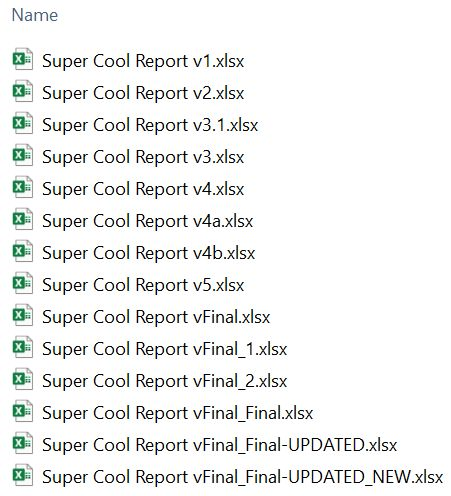
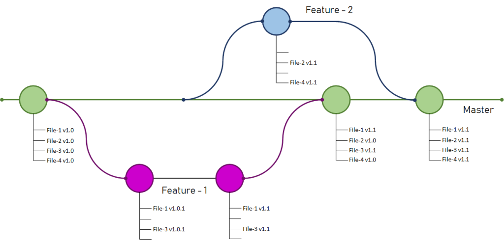

Git et GitHub
Adrien Cloutier
Université Laval
À voir aujourd’hui
- Terminal
- Git
- GitHub
- GitHub pages
Avant de commencer, un peu de terminal
- Ce que vous entrez dans le terminal n’est pas du code, mais des commandes avec des instructions
- Les commandes sont des applications qui sont déjà installées sur votre ordinateur
- Chaque commande est un fichier exécutable.
lsest un fichier dans dans/bin/ls - Le terminal est l’équivalent d’un explorateur de fichiers, mais en mode texte
- À tout moment vous êtes dans une location précise, dans un répertoire ou un dossier
Terminal
macOS
- Terminal

Windows
- PowerShell

Pourquoi utiliser le terminal?
Compréhension accru de l’ordinateur et de votre arborescence
Plusieurs outils ne sont disponibles que dans le terminal
Se familiariser avec la console de R
Git est concentré sur le terminal
Meilleure raison: Parce que c’est le fun!
Liste de commandes utiles
ls- Liste les fichiers et dossiers dans le répertoire courantcd- Change de répertoiremkdir- Crée un nouveau dossierrm- Supprime un fichiercp- Copie un fichiermv- Déplace ou renomme un fichiercat- Affiche le contenu d’un fichiergit- Gestionnaire de version
Git
- Créé par Linus Torvalds en 2005
- Gestion de version
- Permet de suivre l’évolution d’un projet
- Utile pour tout ce qui est texte, incluant les articles et les présentations
- Enregistre tous les changements faits depuis la création du projet (.git)
- Reproductibilité et transparence

Important
Télécharger et installer Git depuis git-scm.com
Configurer git avant de commencer à l’utiliser
- Dans le terminal:
Git

GitHub

GitHub
GitHub = Git + Internet
Plateforme de développement collaboratif
Héberge des projets Git
Acheté par Microsoft pour 7.5 milliards de dollars
Lieu d’entreposage de plusieurs projets open source
Projets open source sur GitHub
Ajouter vos accès
- Créer un compte GitHub :
- Générer un token d’accès classique :
- Connectez-vous à GitHub et allez dans vos Paramètres.
- Dans la section Developer Settings, cliquez sur Personal Access Tokens, puis sur Tokens (classic).
- Créez un nouveau token en cliquant sur Generate new token (classic).
- Choisissez la durée illimité et donnez tous les accès
- Copiez le token généré, car vous ne pourrez plus le visualiser après avoir quitté cette page.
- Quand Git demandera un identifiant et un mot de passe, entrez :
- Identifiant : votre nom d’utilisateur GitHub.
- Mot de passe : collez le token que vous avez généré.
Organiser votre répertoire et placer vos données
.gitignore
- Fichier texte qui spécifie les fichiers et dossiers à ignorer
- Les fichiers et dossiers spécifiés dans le .gitignore ne seront pas suivis par Git
- Exemple de contenu d’un .gitignore
*.csv- Ignore tous les fichiers .csvdata/- Ignore le dossier data.Rproj- Ignore tous les fichiers .Rproj.Renviron- Ignore le fichier .Renviron
Les README.md
Fichier principal pour présenter et documenter un projet
Doit inclure une description claire du projet, comment l’installer et l’utiliser
Souvent écrit en Markdown (.md)
Contient des instructions pour contribuer et des informations sur les dépendances et les licences
Exemple de structure :
- Titre du projet
- Description
- Comment installer
- Comment utiliser
- Comment contribuer
Branches
- Dans notre contexte, une branche est un chapitre, une section, un élément de votre projet

Contribuer? Pull requests (PR)
Les pull requests permettent à d’autres utilisateurs de proposer des modifications à votre projet
Processus de collaboration :
- Un contributeur crée une branche avec ses changements
- Une PR est ouverte pour soumettre ces changements
- Le propriétaire du projet peut commenter, demander des modifications ou accepter la PR
Important pour :
- Suivi des modifications
- Discussion autour des changements
- Validation avant intégration
GitHub pages
- GitHub pages vous permet d’héberger un site web gratuitement
- GitHub permet aussi de lier un nom de domaine à votre site
- Idéal pour votre portfolio de chercheur
Conclusion
Git et GitHub
Comment l’utiliser?